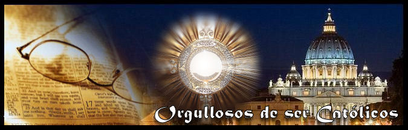
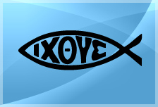
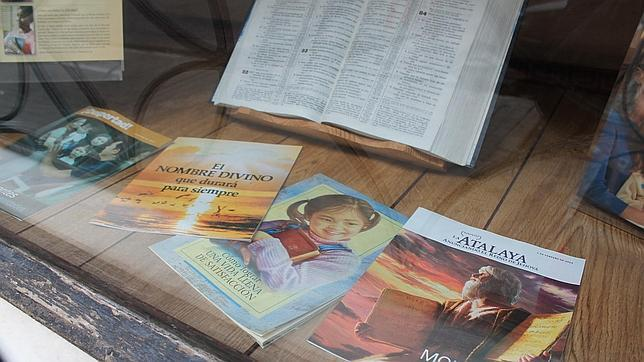

CATOLICOS
En el catolicismo la Semana Santa, se inicia con el Domingo de Ramos, donde se bendicen las palmas, luego durante la semana se realizan misas y confesiones, el Jueves Santo se celebra la Misa Crismal, más tarde la celebración de la Cena del Señor, y concluye con la adoración al Santísimo Sacramento. El Viernes Santo, se lleva adelante el Sermón de las Tres Horas, más tarde la Celebración de la Pasión de Señor, concluyendo con la procesión del Santo Sepulcro. Mientras que el Sábado Santo se realiza la Solemne Vigilia Pascual y el domingo la Misa de Pascua de Resurreción.

La Semana Santa es el momento litúrgico más intenso de todo el año. Sin embargo, para muchos católicos se ha convertido sólo en una ocasión de descanso y diversión. Se olvidan de lo esencial: esta semana la debemos dedicar a la oración y la reflexión en los misterios de la Pasión y Muerte de Jesús para aprovechar todas las gracias que esto nos trae. Para vivir la Semana Santa, debemos darle a Dios el primer lugar y participar en toda la riqueza de las celebraciones propias de este tiempo litúrgico. A la Semana Santa se le llamaba en un principio “La Gran Semana”. Ahora se le llama Semana Santa o Semana Mayor y a sus días se les dice días santos. Esta semana comienza con el Domingo de Ramos y termina con el Domingo de Pascua. Vivir la Semana Santa es acompañar a Jesús con nuestra oración, sacrificios y el arrepentimiento de nuestros pecados. Asistir al Sacramento de la Penitencia en estos días para morir al pecado y resucitar con Cristo el día de Pascua. Lo importante de este tiempo no es el recordar con tristeza lo que Cristo padeció, sino entender por qué murió y resucitó. Es celebrar y revivir su entrega a la muerte por amor a nosotros y el poder de su Resurrección, que es primicia de la nuestra. La Semana Santa fue la última semana de Cristo en la tierra. Su Resurrección nos recuerda que los hombres fuimos creados para vivir eternamente junto a Dios. Domingo de Ramos Celebramos la entrada triunfal de Jesús a Jerusalén en la que todo el pueblo lo alaba como rey con cantos y palmas. Por esto, nosotros llevamos nuestras palmas a la Iglesia para que las bendigan ese día y participamos en la misa. Jueves Santo Este día recordamos la Última Cena de Jesús con sus apóstoles en la que les lavó los pies dándonos un ejemplo de servicialidad. En la Última Cena, Jesús se quedó con nosotros en el pan y en el vino, nos dejó su cuerpo y su sangre. Es el jueves santo cuando instituyó la Eucaristía y el Sacerdocio. Al terminar la última cena, Jesús se fue a orar, al Huerto de los Olivos. Ahí pasó toda la noche y después de mucho tiempo de oración, llegaron a aprehenderlo. Viernes Santo Ese día recordamos la Pasión de Nuestro Señor: Su prisión, los interrogatorios de Herodes y Pilato; la flagelación, la coronación de espinas y la crucifixión. Lo conmemoramos con un Via Crucis solemne y con la ceremonia de la Adoración de la Cruz. Sábado Santo o Sábado de Gloria Se recuerda el día que pasó entre la muerte y la Resurrección de Jesús. Es un día de luto y tristeza pues no tenemos a Jesús entre nosotros. Las imágenes se cubren y los sagrarios están abiertos. Por la noche se lleva a cabo una vigilia pascual para celebrar la Resurrección de Jesús. Vigilia quiere decir “ la tarde y noche anteriores a una fiesta.”. En esta celebración se acostumbra bendecir el agua y encender las velas en señal de la Resurrección de Cristo, la gran fiesta de los católicos. Domingo de Resurrección o Domingo de Pascua Es el día más importante y más alegre para todos nosotros, los católicos, ya que Jesús venció a la muerte y nos dio la vida. Esto quiere decir que Cristo nos da la oportunidad de salvarnos, de entrar al Cielo y vivir siempre felices en compañía de Dios. Pascua es el paso de la muerte a la vida.
CRISTIANOS EVANGELICOS
La otra parte en la iglesia Cristiano Evangélico, se cree que estas fiestas son paganas, ya que con el tiempo se fueron “Cristianizando”; sin embargo el hecho de celebrar Semana Santa, en forma voluntaria, es parte de la libertad que Cristo da.
En esta fecha los evangélicos adoran al Señor y para evangelizar, realizan oraciones, celebran la cena del Señor, entonan himnos; en domingo de resurrección recuerdan la victoria del Señor sobre la muerte.
En fin, todas la religiones cristianas celebran la Semana Santa y afianzan su fe en Cristo, pero entre todas resaltan los católicos por la forma cómo recuerdan esta fecha; la vía crucis y la misma crucifixión de Cristo son las enormes muestras de que la humanidad aún no perdido el amor a Dios.

Para los miembros de la iglesia cristiana evangélica, la Semana Santa es el tiempo para recordar la muerte de Cristo. Para conmemorarla, se congregan en una jornada de oración y adoración, la cual inicia el Jueves Santo a las 9:00 de la noche y se extiende por 24 horas.
En esta reunión se dan cita grupos artísticos y musicales, ya que los cristianos creen que “Dios habita en medio de la alabanza”. Además, para ellos es fundamental la vigilia, es decir, pasar una noche en vela y adorando a Dios.
Con panderos, música y cantos, recuerdan la muerte de Jesucristo. La jornada de adoración comienza el jueves en la noche y termina el viernes. En estas 24 horas, la comunidad cristiana ora por los enfermos y por las necesidades de cada una de las personas que habitan en este mundo.
Frente a la resurrección de Jesucristo, los cristianos manifiestan que este hecho aún no ha sido confirmado; sin embargo, el domingo, día en que los católicos celebran la resurrección, ellos llevan a cabo una reunión de exaltación.
En cuanto a la comida y la vestimenta, esta comunidad no tiene restricción a la hora de ingerir carnes rojas, ni de lucir determinados atuendos.
Nelson González, pastor de la Iglesia Cristiana Filadelfia, señala que esta doctrina comparte las mismas creencias que La Asamblea de Dios, Cuadrangular, Presbiteriana, Casa Sobre la Roca, entre otras congregaciones.
En lo que respecta a la Semana Santa, indica que conmemoran la muerte del Señor Jesucristo a través de la reflexión individual, para tal fin los días jueves, viernes y domingo tienen encuentros personales.
TESTIGOS DE JEHOVA
Las procesiones son de los actos religiosos que mayor número de seguidores congrega en Semana Santa.
La Semana Mayor para los católicos es la época en la que se recuerda y celebra los hechos más relevantes en la vida de Jesús de Nazaret (la Pasión, Muerte y Resurrección), comenzando con el llamado Domingo de Ramos y finalizando el Domingo de Resurrección o también llamado de Pascua.
Otras religiones, por su parte, consideran que estos días no son el único momento para adorar a Dios. Si bien es cierto que aprovechan la semana para remembrar la pasión de Cristo, lo hacen por medio de otro tipo de actividades. Aunque, en general, consideran que a pesar de sus diferencias de doctrina, el mensaje de Jesús es claro: Vivir en paz, porque una religión sin paz y amor es una iglesia estéril.
Los Testigos de Jehová consideran que la Semana Mayor es una fecha común; ellos celebran anualmente la muerte de Jesús, pero lo hacen según el calendario arameo. En dicha reunión comparten vino y pan, tal como lo hizo el Señor en la última cena.
“Nosotros celebramos la muerte de Jesús con una cena, cada año la fecha puede variar dependiendo del calendario arameo.

“Durante la Semana Santa que llaman los católicos, los Testigos de Jehová comemos normalmente, ya que consideramos que esos son días común y corriente. A parte de ellos no creemos en santos ni imágenes”, comentó una feligrés Testigo de Jehová.
.png)
.png)